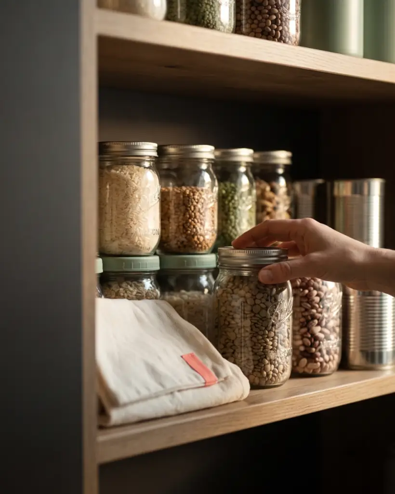
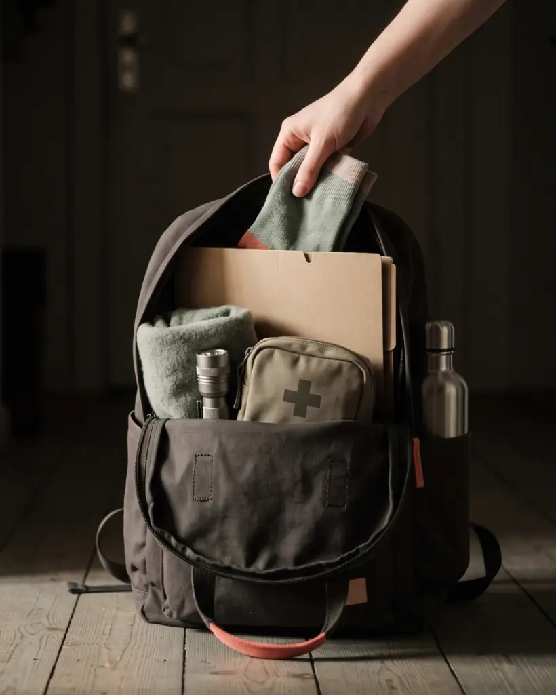

Vorräte, die zu Ihnen passen
Kein Regal voller Konserven, die niemand isst. Sondern ein Vorrat, der zu Ihrem Budget, Ihrer Küche und Ihrem Alltag passt.
Praxisnahe Krisenvorsorge für Frauen
Kein Bunker. Keine Panik. Nur Wissen, das Ihnen Ruhe gibt, bevor Sie sie brauchen.
Erscheint am 15. September 2026
Taschenbuch 18,99 € · E-Book 9,99 € · 348 Seiten
Worum es geht
Ein Stromausfall am Abend. Ein Supermarkt mit leeren Regalen. Ein Gefühl, das plötzlich alles kippen lässt.
Solche Momente kennen Sie vielleicht aus den Nachrichten, vielleicht auch aus eigener Erfahrung. Dieses Buch zeigt Ihnen, wie Sie sich darauf vorbereiten, ohne dabei ängstlicher zu werden.
Es ist kein Ratgeber für den Bunker im Keller, sondern ein Wegweiser für den ganz normalen Alltag: für Vorräte, die wirklich zu Ihrem Leben passen, für den Umgang mit Stromausfällen und kleinen Notfällen, und für die eigene Psyche, wenn der Boden mal wackelt.

Kein Regal voller Konserven, die niemand isst. Sondern ein Vorrat, der zu Ihrem Budget, Ihrer Küche und Ihrem Alltag passt.
Was bei Stromausfall, Wasserknappheit und kleinen Notfällen wirklich hilft. Praktisch, Schritt für Schritt, ohne Fachchinesisch.
Wie Sie ruhig bleiben, wenn es eng wird, und wie Sie jemandem beistehen, der gerade von der Angst überrollt wird.
Der Inhalt
Das Buch beginnt nicht bei der Ausrüstung, sondern bei Ihnen. Erst wenn klar ist, was eine Krise mit einem Menschen macht, ergeben Vorräte und Pläne überhaupt Sinn.
Warum Krisenvorsorge für Frauen anders aussieht, was vergangene Krisen gelehrt haben und wie das Leben aussieht, für das hier geplant wird.
Die acht Phasen der Krisenbewältigung, die fünf Säulen der Resilienz, Katastrophengedanken stoppen und psychische Erste Hilfe für andere.
Wenn es nicht nach drei Tagen vorbei ist: Stress über Wochen, Schlaf, digitaler Detox, Kinder, Partnerschaft und Entscheidungen unter Druck.
Bleiben oder gehen. Die eine Frage, an der alles Weitere hängt, mit Vor- und Nachteilen beider Wege.
Der längste Teil des Buches: Stromausfall, Wasser, Lebensmittelvorrat, Kochen ohne Herd, Hygiene, Menstruation und Verhütung, Abfall, Schutzräume und finanzielle Vorsorge.
Notgepäck, das Sie auch wirklich tragen können. Fluchtwege ohne Auto, Orientierung ohne Handy, unauffällig unterwegs sein, allein oder in der Gruppe.
Infektionsschutz und Prävention für den Fall, dass Praxen geschlossen und Krankenhäuser überlastet sind.
Die eigene Lage nüchtern einschätzen, Nachrichten und Gerüchte einordnen, und entscheiden, wem Sie die Tür öffnen.
Jeder Teil endet mit einer Kurzgeschichte. Eine Frau, eine Situation, eine Nacht. Danach schauen wir gemeinsam auf ihre Entscheidungen: was sie klug gemacht hat, und was besser hätte laufen können.
348 Seiten · Taschenbuch, deutsch, 18,99 € · E-Book für Kindle, 9,99 €, auch in Kindle Unlimited · erscheint am 15. September 2026 bei Amazon
Krisenvorsorge ist kein Zeichen von Angst, sondern von Selbstfürsorge.
Für wen
Die meisten Krisenratgeber sind für jemanden geschrieben, der ein Auto hat, einen Keller, ein Grundstück und niemanden, für den er nebenbei mitdenken muss. Dieses Buch ist für alle anderen.

Und keine Sorge: Es geht hier um Ihre Wohnung, nicht um den Wald. Um ein Regal, in dem etwas mehr steht als sonst. Um einen Plan, den Sie einmal in Ruhe durchdacht haben. Um einen Kanister Wasser, der einfach da ist.
Vorbereitet sein heißt nicht, sich auf das Schlimmste einzustellen. Es heißt, eine Sorge weniger zu haben.
Kostenlos
Eine Checkliste zum Ausdrucken und Abhaken: was Sie zu Hause haben sollten, damit drei Tage ohne Strom, Wasser oder Einkaufen kein Drama werden. Neun Blöcke, dazu ein Teil zum Ausfüllen.
Ohne Anmeldung, ohne Mailadresse, ausdrücklich zum Weitergeben.
Über die Autorin
Elisabeth Marenfeld ist keine Survival-Expertin und war nie bei der Bundeswehr. Was sie hat, ist die Perspektive einer ganz normalen Frau, die 2020 zwischen leeren Regalen stand und beschloss, sich beim nächsten Mal nicht mehr so hilflos zu fühlen.
Seitdem hat sie gelesen, ausprobiert, verworfen und wieder von vorn angefangen: Vorräte, die im Alltag tatsächlich funktionieren, Notfallpläne, die auch ohne Auto aufgehen, und die Frage, was eigentlich mit dem Kopf passiert, wenn der Boden wackelt. Sie schreibt für Frauen, deren Leben nicht in die üblichen Krisenratgeber passt: mit wenig Platz, wenig Geld oder wenig Kraft, oft mit Verantwortung für andere.
Alles, was sie seitdem gelernt hat, steht in diesem Buch. Und im Podcast, weil manches sich besser erzählen als lesen lässt.
Bleiben Sie ruhig, bleiben Sie vorbereitet.
Der Podcast zum Buch. Zwei Sorten Folgen: die einen erklären ein Thema ganz praktisch, mit einem kleinen Schritt, den Sie sofort gehen können. Die anderen erzählen eine Geschichte über eine Frau in einer Krisensituation, und danach schauen wir gemeinsam, was sie klug gemacht hat und was besser hätte laufen können.
Überall, wo es Podcasts gibt. Sobald die ersten Folgen online sind, finden Sie sie auch hier.
Kontakt
Fragen, Rückmeldungen oder Presseanfragen gern per Mail an kontakt@krisenvorsorgefrauen.de.
Hinweis: Dieses Buch ersetzt keine ärztliche, rechtliche oder behördliche Beratung. Im Notfall gilt immer die 112.